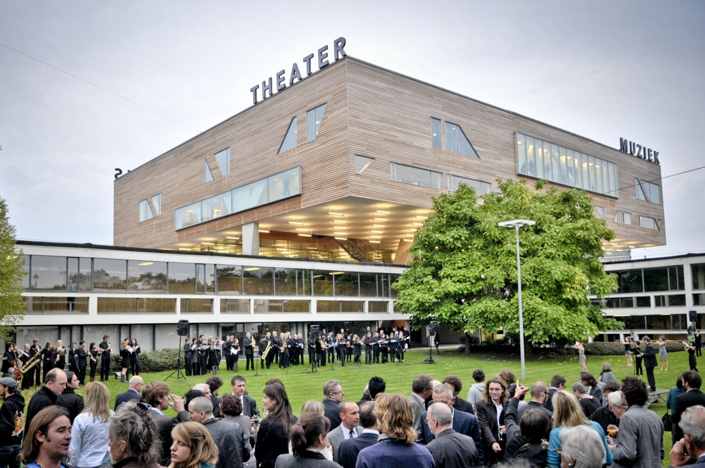
CONSERVATORIUM
het Koninklijk Conservatorium Antwerpen leidt een 600-tal studenten op, waarvan ongeveer een kwart afkomstig is uit het buitenland
we bieden opleidingen aan in Dans, Drama en Muziek, aansluitende Specifieke lerarenopleidingen en verschillende vervolgtrajecten
deze combinatie van opleidingen is uniek in België. Het laat ons toe om diverse en vernieuwende artistieke vormen te beoefenen en samen te werken met verschillende professionele partners.
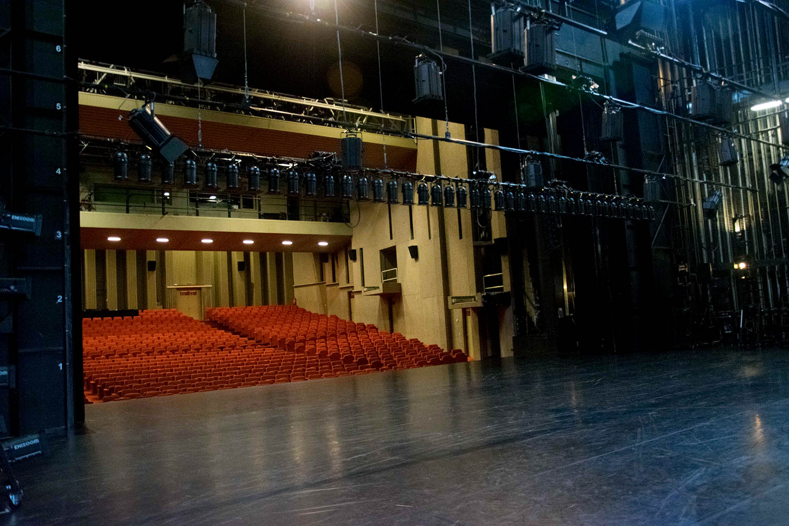
RODE ZAAL
bevindt zich in het bouwdeel "grote podia"
enorme theaterzaal die gebruikt wordt voor voorstellingen
kan worden ingedeeld in twee theater zalen aangepast aan een klein of groot publiek
de inspirerende ruimte laat een grote indruk achter omwille van zijn grootte en prachtige moderne afwerking
COMPUTERLOKAAL
de studenten kunnen gebruik maken van de computers in de computerklas
alle computers zijn uitgerust met internetverbinding
de computers zijn vrij te gebruiken, tenzij er les wordt gegeven
GELE ZAAL
de Gele zaal is een productielokaal
deze zaal kan enkel via de coördinatoren van de opleiding bij de productieleiding worden gereserveerd
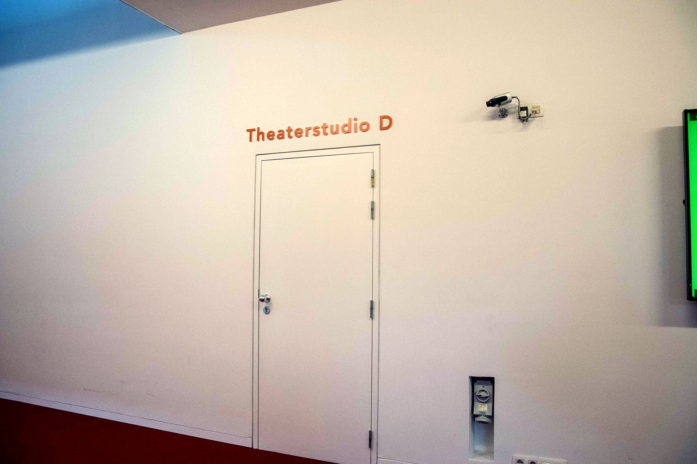
THEATERSTUDIO
deze zaal is ontworpen voor de creatie en repetitie van theater- en dansproducties
in de praktijk wordt de ruimte als werkplaats, als theater- en danszaal, als muziektheaterzaal en als publieksruimte bespeeld
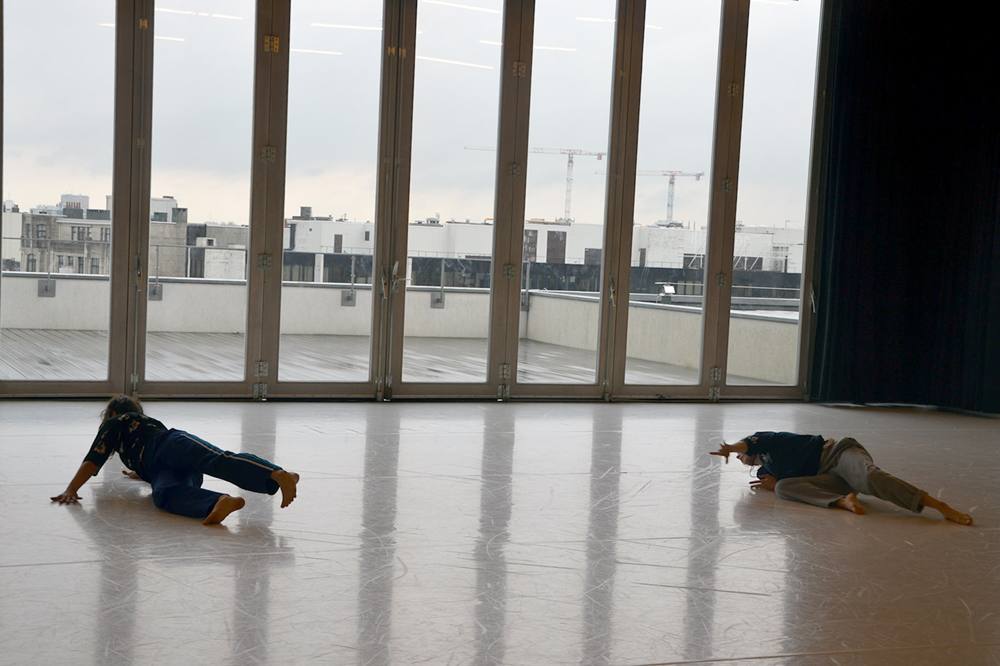
STUDIO TOP
Studio Top is een oefenlokaal voor de dansstudenten
het is een aangename repetitieruimte doordat een van de wanden volledig uit glas bestaat
wanneer de buitentemperatuur dit toelaat, kan dit harmonicaraam volledig opengeschoven worden en kunnen de dansers ook op het buitenterras oefenen
op dit terras genieten de gebruikers van een indrukwekkend stadspanorama
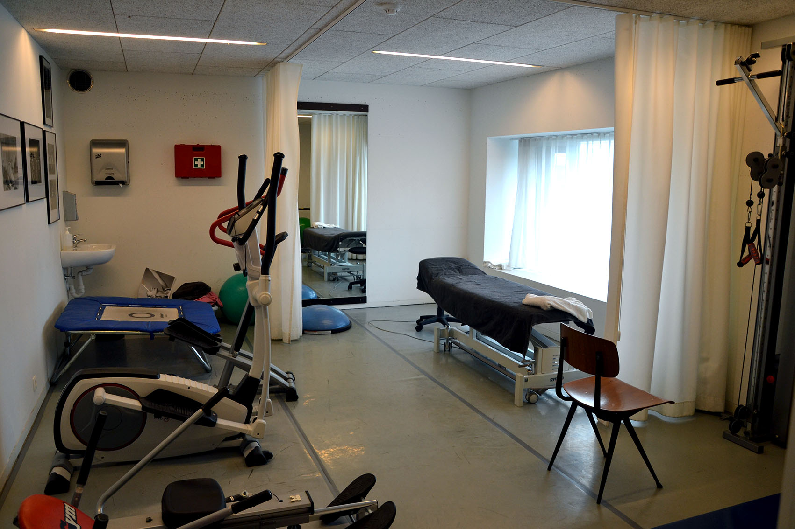
KINESIST
het conservatorium werkt samen met kinesiste Anne Schütt
ze is tijdens de lesperiodes voor alle studenten ter beschikking voor advies en behandeling
dat professioneel dansen uitdagingen stelt aan het lichaam van de danser zal je niet verbazen. Die komen altijd ongelegen en in drukke periodes zoals vlak voor of tijdens examens, concerten of voorstellingen
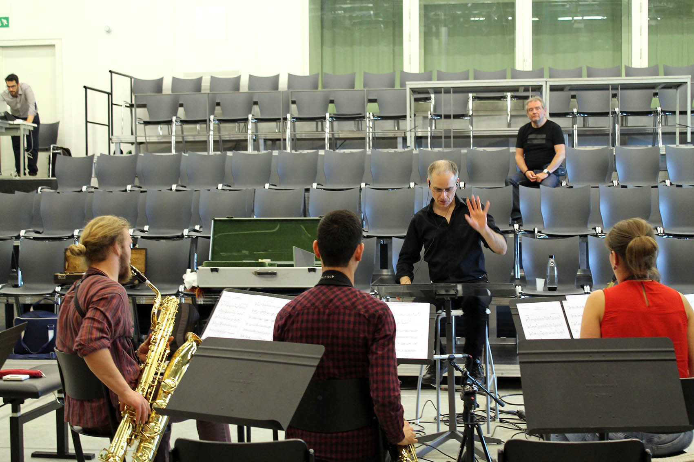
WITTE ZAAL
de witte zaal is voornamelijk een oefenruimte voor studenten muziek
in de witte zaal is plaats voor een publiek van 240 personen, maar er kunnen evenwel ook kleinschalige concerten plaatsvinden
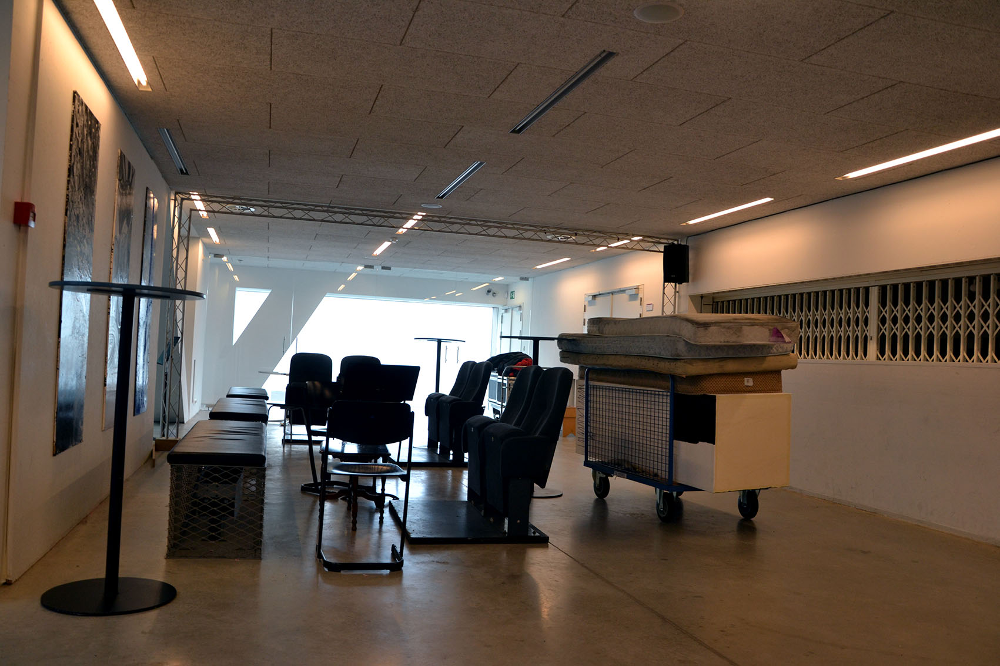
WITTE FOYER
studenten kunnen hier een babbeltje slaan en er iets drinken
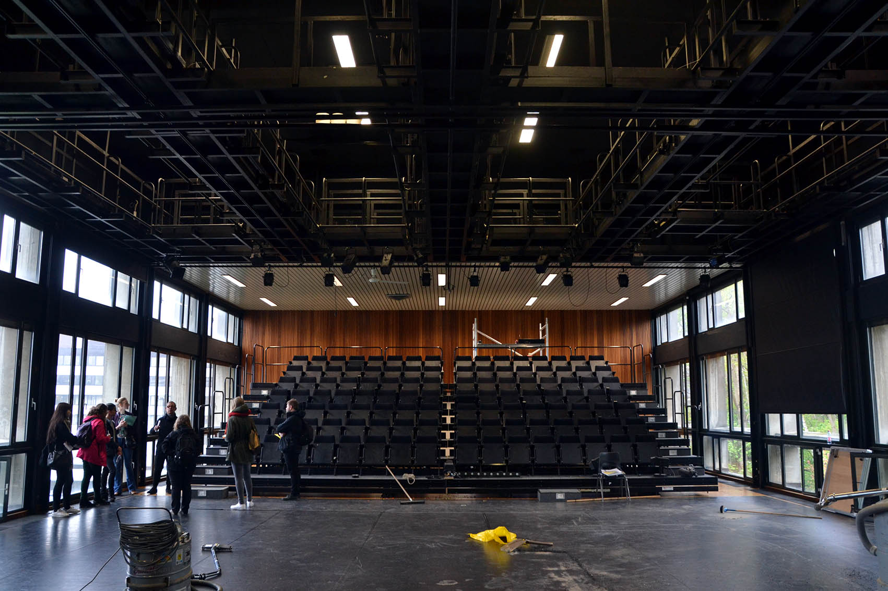
ZWARTE ZAAL
de Zwarte Zaal is een leslokaal voor de studenten van het Conservatorium
publiek komt er bij de examenvoorstellingen van de studenten en bij kleinschalige theater- of dansvoorstellingen
door de infrastructuur is de hoge houten zaal perfect geschikt voor studenten aan jazz doen
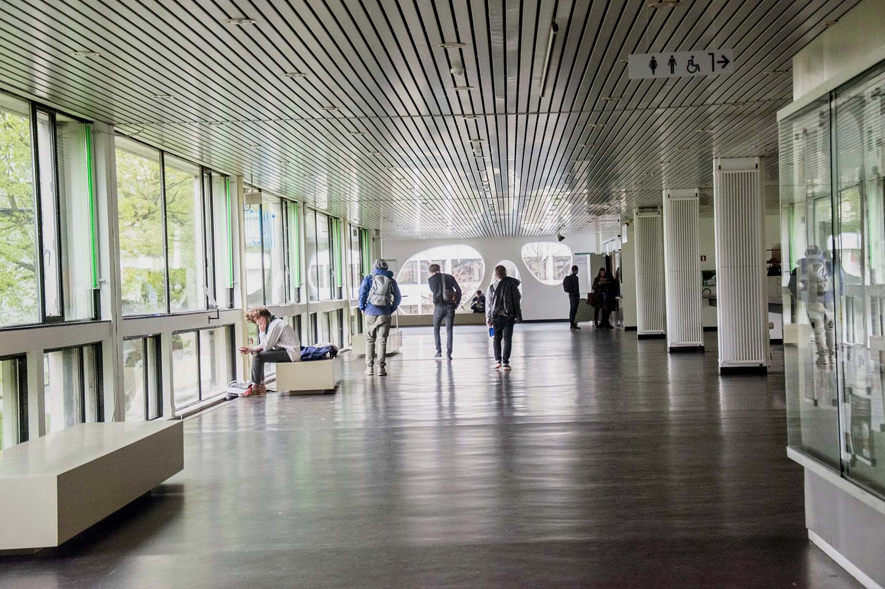
CAFETARIA
in het studentenrestaurant van deSingel kan je dagelijks terecht voor een hap aan studentvriendelijke prijzen
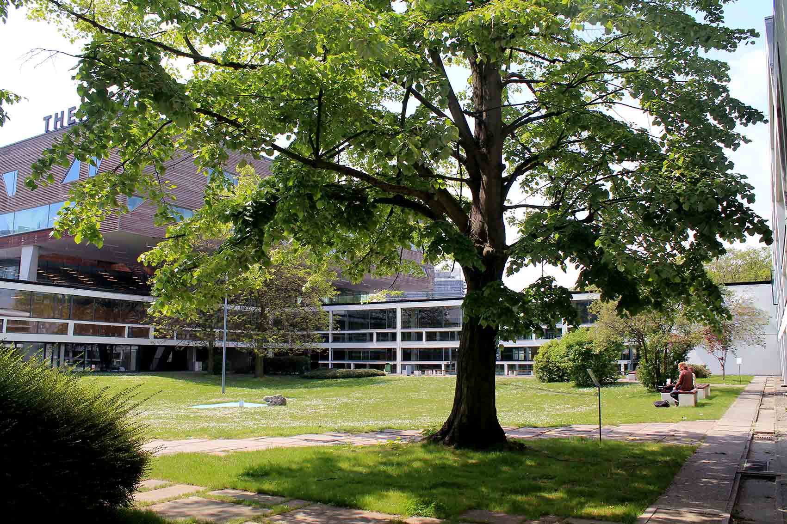
TUIN
het conservatorium beschikt over een ruime tuin waar je verschillende soorten kunst kan vinden
bij goed weer vind je hier studenten die muziek maken, studeren of even tot rust komen
door de vorm van deSingel heb je vanuit elk bouwdeel zicht op de ruime tuin
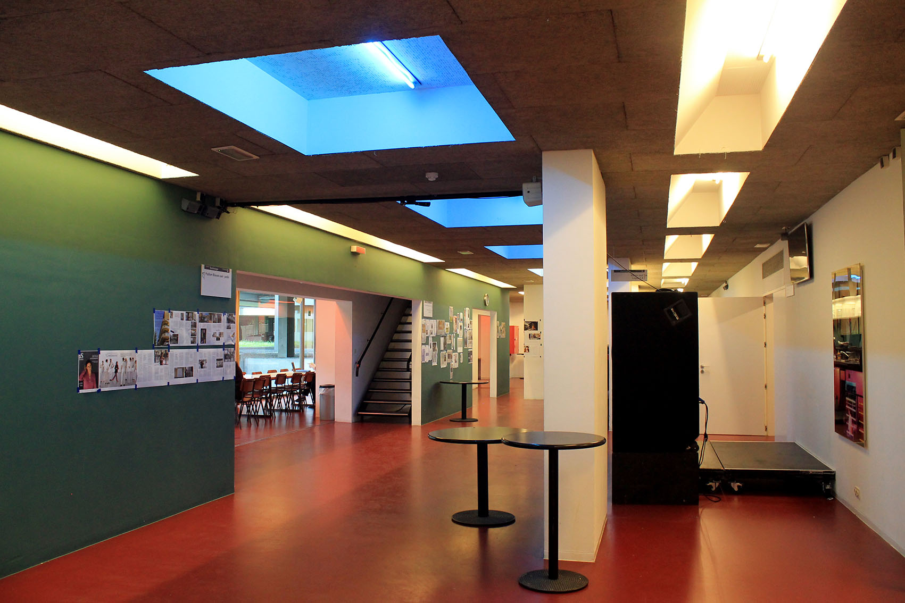
ARTIESTENFOYER
het conservatorium beschikt over een ruime tuin waar je verschillende soorten kunst kan vinden
bij goed weer vind je hier studenten die muziek maken, studeren of even tot rust komen
door de vorm van deSingel heb je vanuit elk bouwdeel zicht op de ruime tuin
OPENBAAR VERVOER
campus deSingel is perfect te bereiken met het openbaar vervoer of fiets
de campusheeft een grote overdekte fietsenstalling, daarnaast kan je ook een vélostation vinden aan de ingang
toch liever met het openbaar vervoer? Neem de trein tot station Antwerpen Zuid of neem tram 2 richting Hoboken of tram 6 richting Olympiade
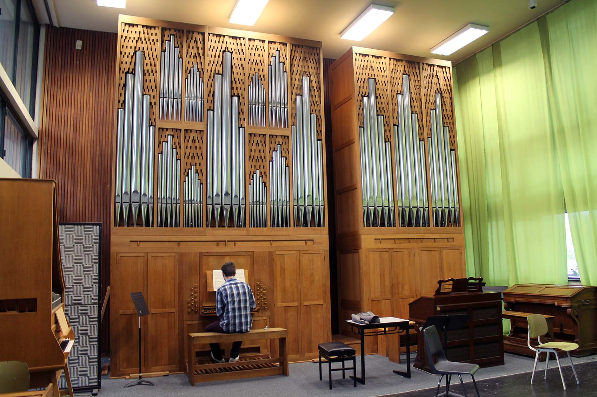
ORGELKLAS
het conservatorium beschikt over een orgel geplaatst in een lokaal van 2 verdiepen hoog
de studenten kunnen hier gebruik van maken
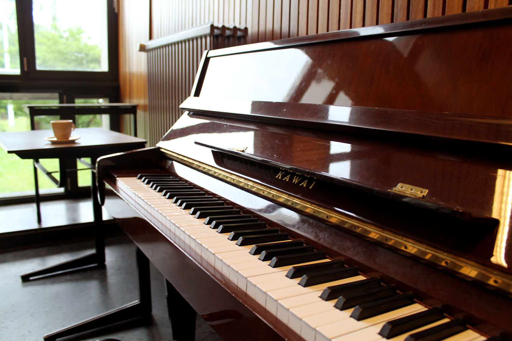
COMPOSITIEKLAS
de opnamestudio met alle nodige apparatuur wordt vooral gebruikt als lokaal waar composities gemaakt worden
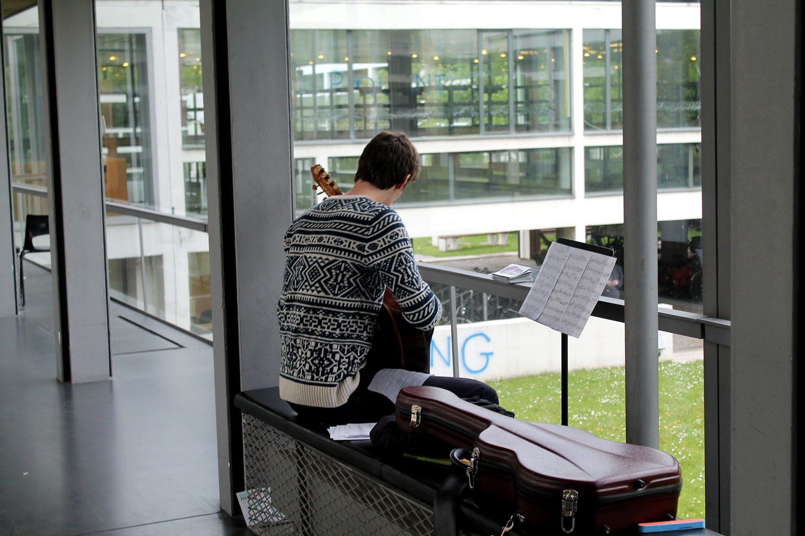
GITAARGANG / GLAZEN GANG
meestal kan je de studenten gitaar vinden in deze gang die bijna volledig uit glas bestaat
de akoestiek is hier uitstekend, dat is de reden waarom deze muziekstudenten hun terrein hier afgebakend hebben
naast de akoestiek is het uitzicht op de tuin ook mooi meegenomen
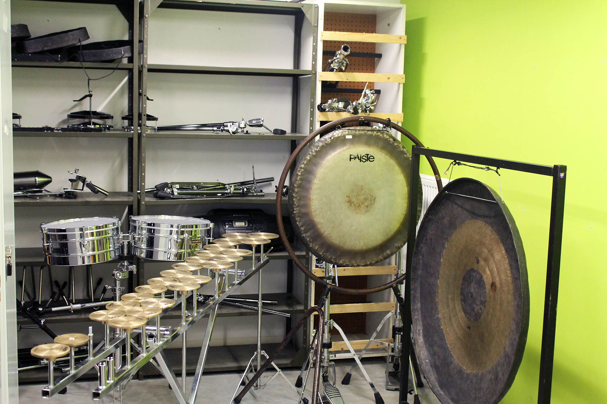
PERCUSSIELOKALEN
studenten die kiezen voor percussie kunnen een groot aanbod aan instrumenten vinden in het conservatorium
verder is er ook een grote opslagruimte voorzien voor de percussie instrumenten
INFO